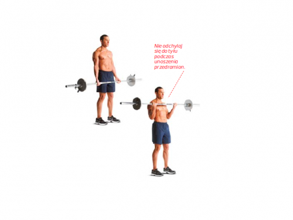
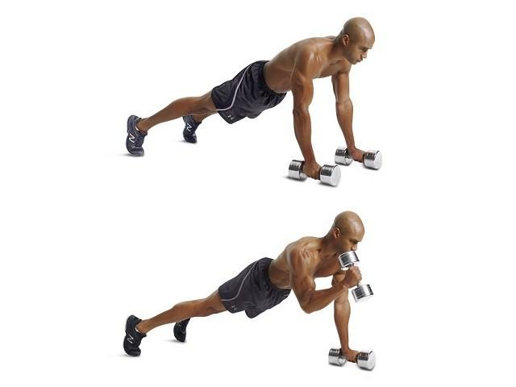
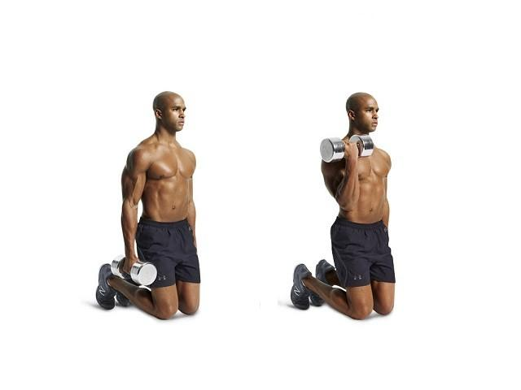

Jak sama nazwa wskazuje, jest to mięsień składający się z dwóch głów. Głowa krótka znajduje się po wewnętrznej stronie ramienia, głowa długa na zewnątrz. Zaraz pod nimi znajduje się mięsień ramienny, który wraz z bicepsem ugina staw łokciowy.
Podstawowe ćwiczenia mające na celu rozwijać nasze bicepsy to uginania ramion z hantlami lub sztangą. Nie zapominajmy jednak o bardzo dużym zaangażowaniu bicepsów oraz mięśni ramiennych w ćwiczeniach mięśni grzbietu.
Złap sztangę podchwytem na szerokość barków. Stań prosto, sztangę trzymając na wysokości ud w wyprostowanych rękach. Unieś przedramiona aż do pełnego napięcia bicepsów.
Przyjmij pozycję jak do klasycznej pompki, ciężar opierając na dwóch hantlach. Zachowując równowagę, wykonaj zginanie prawego przedramienia. Wróć do pozycji startowej, po czym powtórz ruch lewą ręką. To jedno powtórzenie.
Uklęknij na macie i złap hantlę prawą ręką. Łokieć dociśnij do korpusu. Zacznij od trzymania hantli chwytem neutralnym. Wykonaj teraz zginanie przedramienia aż do pełnego napięcia bicepsa. Wróć do startu. Po serii zamień strony.
Autor strony: 0000000000